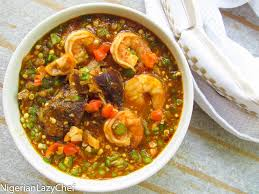

Okro soup recipe

Description
Okra soup (African okro soup) is made with okra vegetables cooked in a delicious mixture of palm oil, shrimps, goat meat, fish, and African spices and simmered to perfection. This loaded okro soup is a staple in West Africa, including Nigeria, Ghana, and Cameroon. Okra soup is deliciously satisfying, nutritious, and loaded with proteins and healthy fat. It is also excellent for busy weeknights because it can be prepped ahead and even when frozen.
Ingredients
- Sliced Okro
- Stockfish head
- Meat or Chicken
- Pepper
- Mackrerel
- Salt and seasoning
- Red palm oil
- Grounded crayfish

Steps
- Cut the assortment of meat you chose into small pieces. Then add some salt, black pepper, seasoning cubes, and enough water and cook until tender.
- You will need the meat stock to enhance the soup's flavor, so don't toss it.
- If you're using smoked fish and locust bean, soak them separately in hot water for 5 minutes, break apart the smoked catfish and remove the bones. Then, wash and drain the locust bean.
- In a large skillet on medium-high heat, add some palm oil. Fry some onions till it just begins to turn brown.
- Then add the chopped okra. Stir in for about 5 minutes, and the okra will start to turn a bit slimy.
- Add in the meat stock from boiling the meat or just water if you have none. Since the meat stock is usually very flavorful, you might need to add more spices to bring out the flavor if you just use water.
- Bring to a boil and add the spices, meat, shrimp, bell pepper, smoked catfish, and locust bean.
- You can add or subtract anything on this list; just make it your own!.
- Add some spinach to make it even more filling.
- When cooking the okra, let it boil for 5 minutes, then check the texture of the soup with a slotted spoon. At this point, I am usually okay with the texture but if it is too crunchy for you, let it boil for a few more minutes. Store your leftover okra soup in an airtight container in the fridge for 3-5 days. To reheat, either microwave it in 1-2 minute bursts until fully reheated or let it come to temperature in a saucepan on the stove.